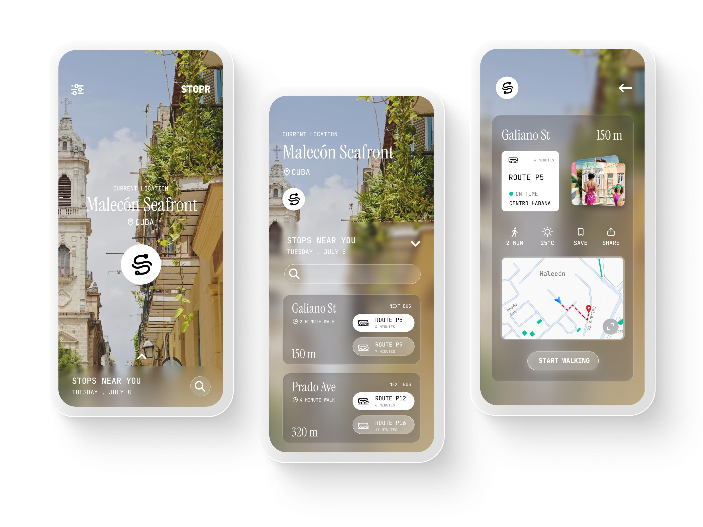
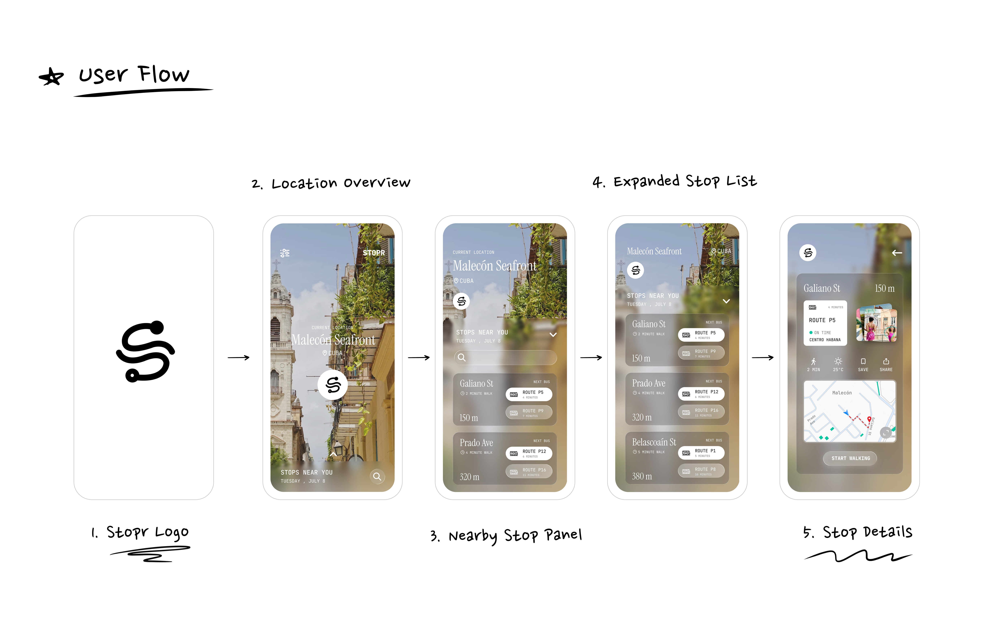
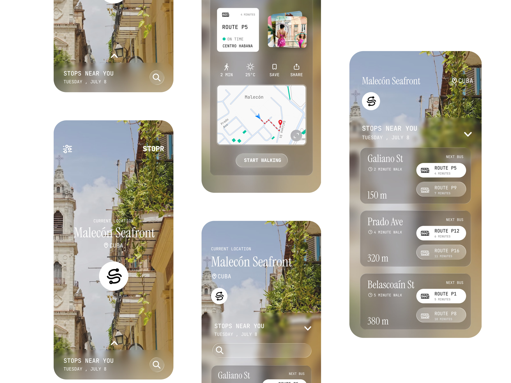

Imagine never missing a bus—or even stressing about where to catch one. STOPR redefines urban transit with a sleek, swipe-driven interface that puts nearby stops and real-time arrivals at your fingertips in seconds.
overview
The design investigates how fragmented data — such as bus routes, stop positions, and arrival times, can be structured into a clean, simple interface that enables fast, on-the-go decision-making.

DESIGN DECISIONS
Created to provide quicker, clearer, and more actionable access to nearby bus information.
01
Swipe-Up Interface
An upward-sliding panel emerges from the bottom of the screen, displaying nearby bus stops without obscuring the map. This design enables users to smoothly transition from an overview of their location to detailed route data.
02
Essential Stop Information
Key details—walking distance, route numbers, and arrival times—are presented upfront, helping users compare stops efficiently and decide faster.
03
Contextual Features
Practical additions like weather conditions, sharing capabilities, street-level imagery, and navigation assistance improve everyday functionality while maintaining a clean, uncluttered interface.

Design System
Aa
JetBrains Mono
is designed by
Philipp Nurullin and Konstantin Bulenkov. JetBrains Mono’s typeface forms are simple and free from unnecessary details. Rendered in small sizes, the text looks crisper.
RegularMediumSemiBoldBold
#FFFFFF
white
#DBEBFF
seashell blue
#00C7A2
caribbean green
#89B14A
olive green
#050505
black

Final Takeaways and
What I’d Improve Next...
Displaying walking distance, route numbers, and arrival times up front, so that users can easily compare nearby stops and choose where to go.
Maintaining the map in view while showing stop details helps people understand their location without cluttering the screen.
In future, I’d look into clearer ways to share live updates—like delays, how full a bus is, or service changes, so that the riders can make smarter choices on the go.
Including route previews, transfer tips and other travel options could make it more helpful for longer trips.